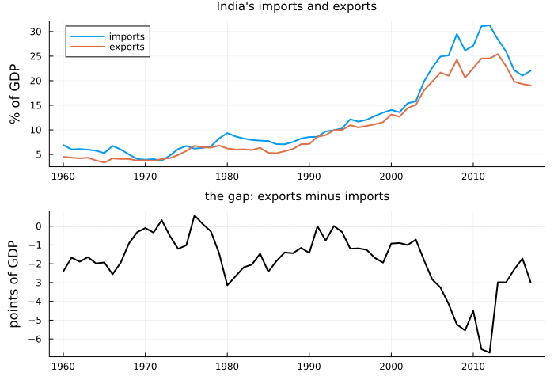
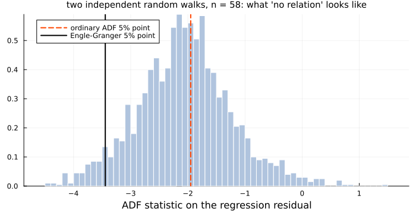
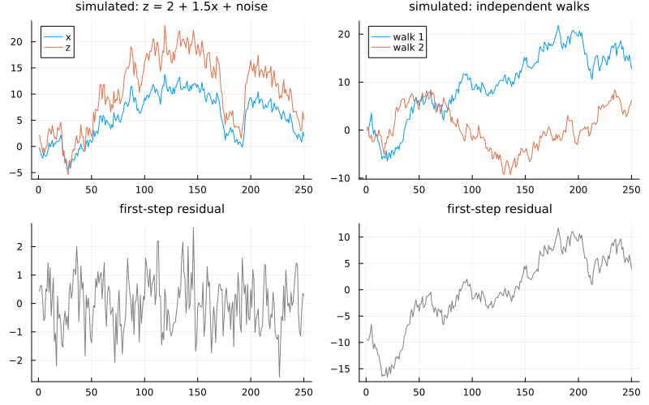
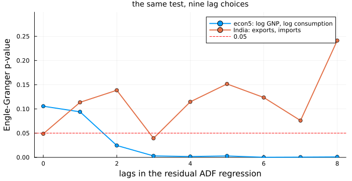
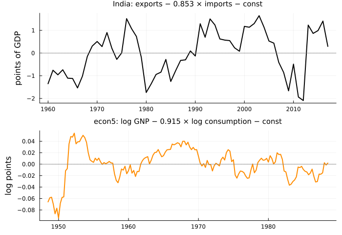
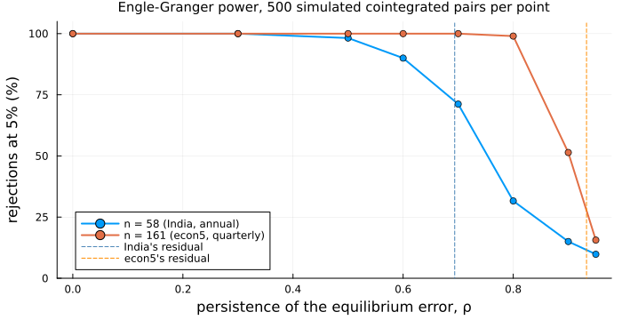
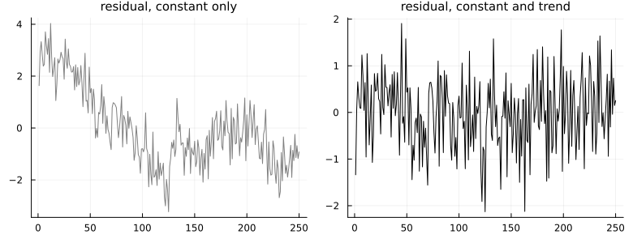

Series That Cannot Drift Apart
using TSAnalytics, Plots, Statistics
g = dataset("global_economy")
ix = findall(==("India"), g.Country)
yr = Int.(g.Year[ix])
imports = Float64.(g.Imports[ix])
exports = Float64.(g.Exports[ix])
balance = exports .- imports
println("imports: ", round(imports[1], digits=1), "% of GDP in 1960, ", round(imports[end], digits=1),
"% in 2017; exports: ", round(exports[1], digits=1), "% and ", round(exports[end], digits=1), "%")
println("trade balance: lowest ", round(minimum(balance), digits=2), " points in ", yr[argmin(balance)],
", highest ", round(maximum(balance), digits=2), " in ", yr[argmax(balance)])imports: 6.9% of GDP in 1960, 22.0% in 2017; exports: 4.5% and 19.0%
trade balance: lowest -6.72 points in 2012, highest 0.57 in 1976p1 = plot(yr, [imports exports]; label=["imports" "exports"], linewidth=2, legend=:topleft,
ylabel="% of GDP", title="India's imports and exports", titlefontsize=10)
p2 = plot(yr, balance; color=:black, linewidth=2, legend=false, ylabel="points of GDP",
title="the gap: exports minus imports", titlefontsize=10)
hline!(p2, [0]; color=:grey, linestyle=:dot)
plot(p1, p2; layout=(2, 1), link=:x, size=(700, 480), left_margin=3Plots.mm)
Chapter 45 ended on this pair and a question it could not answer. Since 1960 the import share has more than tripled and the export share quadrupled, and neither looks as though it returns to any fixed level. The gap between them, India's trade balance in goods and services, is another matter: it has never been above 0.57 points of GDP, reached in 1976, and at its widest, in 2012, it stood at −6.72. It plainly moves. Does it wander, the way each share does, or is something pulling it back?
The answer decides what to fit. If the gap wanders, a regression of one share on the other in levels is spurious, and the VAR in changes of Chapters 45 to 48 was right. If it is held, differencing threw away the one fact that binds the series together over decades.
The obvious attempt
The gap is a series, and Chapter 9 gave a test for whether a series wanders. But the trade balance gives imports and exports equal weight, and nothing says a tie, if there is one, is one-for-one in shares of GDP. So test the gap, and also let a regression choose the weight and test what it leaves over:
a_bal = adf_test(balance)
println("ADF on exports − imports: statistic ", round(a_bal.statistic, digits=3),
", p = ", round(a_bal.pvalue, digits=3), ", lags ", a_bal.lags)
X = hcat(ones(length(imports)), imports)
b = X \ exports
u = exports .- X * b
r2 = 1 - sum(abs2, u) / sum(abs2, exports .- mean(exports))
a_u = adf_test(u; regression=:n, maxlag=4, autolag=nothing)
println("exports = ", round(b[1], digits=3), " + ", round(b[2], digits=3), " × imports, R² = ", round(r2, digits=3))
println("ADF on the residual, 4 lags: statistic ", round(a_u.statistic, digits=3),
", p = ", round(a_u.pvalue, digits=4))ADF on exports − imports: statistic -2.181, p = 0.213, lags 0
exports = -0.032 + 0.853 × imports, R² = 0.98
ADF on the residual, 4 lags: statistic -2.981, p = 0.0028The gap itself does not reject a unit root (p = 0.213). The regression residual does, with p = 0.0028. That looks decisive, and the p is wrong. Chapter 9's tables assume the series was handed to the test. This one was made by least squares, which picks the slope leaving the smallest residual variance — the combination that looks most stationary. Run the same two steps on independent random walks of India's length and count how often they "pass":
using Random, LinearAlgebra
Random.seed!(49)
n, nsim = 58, 2000
tstat_slope(y, x) = (Z = hcat(ones(length(x)), x); c = Z \ y; e = y .- Z * c;
c[2] / sqrt(sum(abs2, e) / (length(y) - 2) * inv(Z' * Z)[2, 2]))
null_t = zeros(nsim); naive = falses(nsim); proper = falses(nsim); big_t = falses(nsim)
for s in 1:nsim
x, y = cumsum(randn(n)), cumsum(randn(n))
c = coint_test(hcat(y, x); lags=0, autolag=nothing)
null_t[s] = c.statistic
naive[s] = adf_test(c.resid; regression=:n, maxlag=0, autolag=nothing).pvalue < 0.05
proper[s] = c.pvalue < 0.05
big_t[s] = abs(tstat_slope(y, x)) > 1.96
end
cv_eg = coint_test(hcat(exports, imports); lags=0, autolag=nothing).critical_values.values[2]
println("independent random walks, n = ", n, ", ", nsim, " pairs:")
println(" slope 'significant' at 5%: ", round(100 * mean(big_t), digits=1), "%")
println(" residual ADF rejects, ordinary table: ", round(100 * mean(naive), digits=1), "%")
println(" residual ADF rejects, cointegration table: ", round(100 * mean(proper), digits=1), "%")
println("5% critical values: ordinary −1.95 (no constant), Engle-Granger ", round(cv_eg, digits=2))independent random walks, n = 58, 2000 pairs:
slope 'significant' at 5%: 68.2%
residual ADF rejects, ordinary table: 57.0%
residual ADF rejects, cointegration table: 6.2%
5% critical values: ordinary −1.95 (no constant), Engle-Granger -3.45histogram(null_t; bins=60, normalize=:pdf, color=:lightsteelblue, linecolor=:white, label="",
xlabel="ADF statistic on the regression residual",
title="two independent random walks, n = 58: what 'no relation' looks like", titlefontsize=10)
vline!([-1.95]; color=:orangered, linestyle=:dash, linewidth=2, label="ordinary ADF 5% point")
vline!([cv_eg]; color=:black, linewidth=2, label="Engle-Granger 5% point")
plot!(size=(700, 360), legend=:topleft, bottom_margin=3Plots.mm)
The first line is Granger and Newbold's spurious regression from the opening of Chapter 8, at India's sample size: the slope looks significant in 68% of regressions of one unrelated trend on another. The second is worse: read against the ordinary table, the residual test finds a relationship between series that share nothing 57% of the time, more than eleven times its nominal rate. Under "no relation" the bulk of the statistic sits left of the ordinary 5% point, because least squares has already done some of the rejecting. Against the right critical value, the black line, the rate falls to 6.2%. The two steps were right; the table was not.
The idea
A series is integrated of order one, I(1), when it wanders like a random walk but its changes do not. Two I(1) series added or subtracted in any proportion usually still wander. Engle and Granger (1987) named the exception: if for some β
\[z_t = y_t - \mu - \beta x_t \quad \text{is stationary,}\]
then x and y are cointegrated. Each series may go anywhere; z_t cannot. It is an equilibrium error, the distance from a long-run relation y = μ + βx, and something pulls the series back whenever they stray. Engle and Granger also showed that cointegrated series always have an error-correction form, in which this period's changes respond to last period's z — the model of Chapter 50.
This resolves Chapter 45's dilemma. When no β makes z_t stationary, a levels regression is spurious and the series belong in differences. When one does, the levels regression is anything but spurious — its slope converges to β at rate T rather than the usual √T — and a model in differences alone leaves out z_{t−1}, the variable that matters most. The question is not "levels or differences?" but "is there a stationary combination?"
The Engle-Granger test asks it in the two steps just tried: regress y on x with a constant, then a Dickey-Fuller test with no constant on the residual. The null is no cointegration, a unit root in z_t. Only the reference distribution changes: MacKinnon's response surfaces for the cointegration case, which depend on the number of series and the deterministic terms. Two simulated pairs from the package's test fixtures show both outcomes: x a random walk with z = 2 + 1.5x plus stationary noise, and two independent walks.
using DelimitedFiles
fx(name) = readdlm(joinpath(pkgdir(TSAnalytics), "test", "fixtures", "var", name), ','; skipstart=1)
yes, no = fx("coint2_yes.csv"), fx("coint2_no.csv") # simulated, 250 observations each
c_yes = coint_test(yes[:, [2, 1]]; lags=4, autolag=nothing) # z first, regressed on x
c_no = coint_test(no; lags=4, autolag=nothing)
c_yx = coint_test(yes; lags=4, autolag=nothing) # the other way round
for (lab, c) in (("cointegrated, z on x", c_yes), ("cointegrated, x on z", c_yx), ("independent", c_no))
println(rpad(lab, 21), " statistic ", round(c.statistic, digits=3), ", p = ", round(c.pvalue, sigdigits=2),
", coefficients (constant, slope) ", round.(c.beta, digits=3))
endcointegrated, z on x statistic -5.349, p = 3.6e-5, coefficients (constant, slope) [2.047, 1.494]
cointegrated, x on z statistic -5.279, p = 4.9e-5, coefficients (constant, slope) [-1.247, 0.658]
independent statistic -1.258, p = 0.84, coefficients (constant, slope) [9.902, -0.173]pair(Z, c, ttl, lab) = plot(plot(Z; label=lab, legend=:topleft, title=ttl, titlefontsize=10),
plot(c.resid; color=:grey, legend=false, title="first-step residual",
titlefontsize=10); layout=(2, 1))
plot(pair(yes, c_yes, "simulated: z = 2 + 1.5x + noise", ["x" "z"]),
pair(no, c_no, "simulated: independent walks", ["walk 1" "walk 2"]); layout=(1, 2), size=(800, 500))
On the left the regression recovers the design — a constant of 2.047 and a slope of 1.494 against the true 2 and 1.5 — and its residual is noise around zero: p = 3.6e-5. On the right the regression still finds a line, as it always will, but the residual wanders as far as the series do, and p = 0.84. Note the middle line. The first column is the dependent variable, and the test is not symmetric: −5.349 one way, −5.279 the other. Both reject here; near a critical value they need not agree, so put first the series you would write the relation for.
Making it work
coint_test is the two steps with the right table. The consumption-income pair is the textbook case of cointegration: households smooth spending around their long-run income, so the two can part for a while but not for ever. econ5, Shumway and Stoffer's quarterly US data from 1948-III to 1988-II, carries both. Take log GNP as the dependent variable, with four lags in the second step:
e = dataset("econ5")
lg, lc = log.(Float64.(e[:gnp])), log.(Float64.(e[:consum]))
E = hcat(lg, lc)
c4 = coint_test(E; lags=4, autolag=nothing)
println("log GNP on log consumption, 4 lags: statistic ", round(c4.statistic, digits=3),
", p = ", round(c4.pvalue, digits=4), ", slope ", round(c4.beta[2], digits=3),
"; the other order: p = ", round(coint_test(E[:, [2, 1]]; lags=4, autolag=nothing).pvalue, digits=4))
ca, cI = coint_test(E), coint_test(hcat(exports, imports))
for (lab, c) in (("econ5", ca), ("India", cI))
println(lab, ", lags chosen by AIC: ", c.lags, ", statistic ", round(c.statistic, digits=3),
", p = ", round(c.pvalue, digits=3))
end
L = 0:8
pE = [coint_test(E; lags=k, autolag=nothing).pvalue for k in L]
pI = [coint_test(hcat(exports, imports); lags=k, autolag=nothing).pvalue for k in L]
println("p by lag 0-8, econ5: ", round.(pE, digits=3))
println("p by lag 0-8, India: ", round.(pI, digits=3))
rho(z) = cor(z[2:end], z[1:end-1])
println("lag-one autocorrelation of the residual: India ", round(rho(cI.resid), digits=2),
", econ5 ", round(rho(c4.resid), digits=2))log GNP on log consumption, 4 lags: statistic -4.405, p = 0.0017, slope 0.915; the other order: p = 0.0031
econ5, lags chosen by AIC: 0, statistic -3.019, p = 0.106
India, lags chosen by AIC: 0, statistic -3.346, p = 0.049
p by lag 0-8, econ5: [0.106, 0.094, 0.025, 0.003, 0.002, 0.003, 0.0, 0.001, 0.001]
p by lag 0-8, India: [0.049, 0.114, 0.139, 0.039, 0.115, 0.152, 0.124, 0.076, 0.241]
lag-one autocorrelation of the residual: India 0.69, econ5 0.93plot(L, [pE pI]; marker=:circle, linewidth=2, label=["econ5: log GNP, log consumption" "India: exports, imports"],
xlabel="lags in the residual ADF regression", ylabel="Engle-Granger p-value",
title="the same test, nine lag choices", titlefontsize=10, legend=:topright, ylims=(0, 0.3),
size=(700, 360), bottom_margin=3Plots.mm, left_margin=3Plots.mm)
hline!([0.05]; color=:red, linestyle=:dash, label="0.05")
With four lags, a year of quarters, Engle-Granger rejects no cointegration at p = 0.0017 (0.0031 with consumption first), with a slope of 0.915 between the logs. Let AIC choose the lags, and it settles on none and p = 0.106. From two lags upward every choice rejects at 5%; at zero and one, neither does. The lags absorb short-run dynamics in the residual, and a year of them is the usual allowance for quarterly data, but an automatic choice is not a neutral one: report the lag with the result.
India's row settles nowhere. AIC again chooses no lags, and p = 0.049 lands just inside 5%; one lag moves it to 0.114, three to 0.039, eight to 0.241. On 58 annual observations the test sits on the boundary however it is run.
Phillips and Ouliaris (1990) built a second test on long-run covariances. Their Pz is a trace over all the series, so none is singled out and the column order cannot matter; phillips_ouliaris_test defaults to it. It is right-tailed — a large value rejects — and the paper tabulates only quantiles, so there is no p-value; reject compares in the right direction for either test.
for (lab, Y) in (("simulated, cointegrated", yes), ("simulated, reversed", yes[:, [2, 1]]),
("simulated, independent", no), ("econ5", E), ("India", hcat(exports, imports)))
t = phillips_ouliaris_test(Y)
println(rpad(lab, 24), " Pz = ", lpad(round(t.statistic, digits=2), 6), " 10% point ",
round(t.critical_values.values[1], digits=2), " rejects at 10%: ", reject(t; level=10.0),
", at 1%: ", reject(t; level=1.0))
endsimulated, cointegrated Pz = 205.6 10% point 47.59 rejects at 10%: true, at 1%: true
simulated, reversed Pz = 205.6 10% point 47.59 rejects at 10%: true, at 1%: true
simulated, independent Pz = 16.89 10% point 47.59 rejects at 10%: false, at 1%: false
econ5 Pz = 28.51 10% point 47.59 rejects at 10%: false, at 1%: false
India Pz = 34.88 10% point 47.59 rejects at 10%: false, at 1%: falseOn the simulated pair Pz is 205.6 in either order, far beyond the 1% point; on the independent walks it is 16.89. On both real pairs it does not reject even at 10%: 28.51 for econ5 and 34.88 for India, against 47.59. For econ5 that is a genuine split between two tests of the same null on the same data. The two estimated disequilibria, each the residual of its first-step regression:
tq = 1948.5 .+ (0:160) ./ 4
q1 = plot(yr, cI.resid; color=:black, linewidth=2, legend=false, titlefontsize=10,
title="India: exports − 0.853 × imports − const", ylabel="points of GDP")
q2 = plot(tq, c4.resid; color=:darkorange, linewidth=2, legend=false, titlefontsize=10,
title="econ5: log GNP − 0.915 × log consumption − const", ylabel="log points")
foreach(q -> hline!(q, [0]; color=:grey, linestyle=:dot), (q1, q2))
plot(q1, q2; layout=(2, 1), size=(700, 480), left_margin=3Plots.mm)
Both cross zero repeatedly and neither drifts off, but both take their time about it: the lag-one autocorrelations printed earlier are 0.69 for India and 0.93 for econ5. That persistence is what the tests must see through.
A Phillips-Ouliaris result has no p-value field, and asking for one is refused with the reason rather than answered with a table bound:
try
pvalue(phillips_ouliaris_test(E))
catch err
println(first(split(sprint(showerror, err), '\n')))
endArgumentError: pvalue: the Phillips-Ouliaris tests have critical values only -- Phillips & Ouliaris (1990) tabulate quantiles, not a distribution function -- so use critical_values(t), or reject(t; level). (tseries::po.test reports the table bounds 0.01 and 0.15 as if they were p-values.)critical_values lists levels in opposite orders for the two tests, so reject matches level by value.
The complication
A test that cannot reject has said something only if it could have. Simulate cointegrated pairs at India's length and econ5's, with an equilibrium error that is AR(1) with coefficient ρ — at ρ = 0 the pull back is immediate, at ρ = 1 there is none — and count how often Engle-Granger finds the relation.
function eg_power(ρ, n; nsim=500)
hits = 0
for _ in 1:nsim
x = cumsum(randn(n))
z = zeros(n); z[1] = randn() / sqrt(1 - ρ^2)
for t in 2:n
z[t] = ρ * z[t-1] + randn()
end
hits += coint_test(hcat(1 .+ x .+ z, x); lags=0, autolag=nothing).pvalue < 0.05
end
hits / nsim
end
Random.seed!(7)
ρs = [0.0, 0.3, 0.5, 0.6, 0.7, 0.8, 0.9, 0.95]
pw = [eg_power(ρ, n) for ρ in ρs, n in (58, 161)]
println("ρ: ", ρs)
println("power, n = 58: ", round.(Int, 100 .* pw[:, 1]), " %")
println("power, n = 161: ", round.(Int, 100 .* pw[:, 2]), " %")ρ: [0.0, 0.3, 0.5, 0.6, 0.7, 0.8, 0.9, 0.95]
power, n = 58: [100, 100, 98, 90, 71, 32, 15, 10] %
power, n = 161: [100, 100, 100, 100, 100, 99, 51, 16] %plot(ρs, 100 .* pw; marker=:circle, linewidth=2, label=["n = 58 (India, annual)" "n = 161 (econ5, quarterly)"],
xlabel="persistence of the equilibrium error, ρ", ylabel="rejections at 5% (%)",
title="Engle-Granger power, 500 simulated cointegrated pairs per point", titlefontsize=10,
legend=:bottomleft, ylims=(0, 105), size=(700, 360), bottom_margin=3Plots.mm, left_margin=3Plots.mm)
vline!([rho(cI.resid) rho(c4.resid)]; color=[:steelblue :darkorange], linestyle=:dash,
label=["India's residual" "econ5's residual"])
This is Chapter 9's power curve again, because the second step is a unit-root test. At India's estimated persistence, 0.69, 161 quarters would find the relation every time; 58 years find it about seven times in ten, and at ρ = 0.8 under one time in three — and autocorrelations estimated from short samples are biased towards zero, more so for a residual least squares chose to look stationary. India's borderline result is what a real but slowly correcting tie would often produce on 58 points. The economics — a country cannot borrow without limit to pay for its imports — argues for a tie; the data neither confirm nor refute it. Failing to reject no cointegration is not evidence for it. econ5's 0.93 sits where even 161 quarters give no better than even odds, which is why its verdict depends on the test and the lag.
A second trap is in the deterministic terms. The simulated fixture coint2_trend.csv has an equilibrium that itself contains a trend:
tr = fx("coint2_trend.csv")
ct_c = coint_test(tr; lags=4, autolag=nothing)
ct_t = coint_test(tr; trend=:trend, lags=4, autolag=nothing)
for (lab, c) in (("constant only ", ct_c), ("constant and trend", ct_t))
println(lab, " Engle-Granger ", round(c.statistic, digits=3), ", p = ", round(c.pvalue, sigdigits=2))
end
for d in (:none, :const, :trend)
t = phillips_ouliaris_test(tr; kind=:Pu, deterministic=d)
println("Phillips-Ouliaris Pu, ", rpad(d, 7), lpad(round(t.statistic, digits=2), 7),
" rejects at 10%: ", reject(t; level=10.0), ", at 1%: ", reject(t; level=1.0))
endconstant only Engle-Granger -2.172, p = 0.44
constant and trend Engle-Granger -5.857, p = 1.9e-5
Phillips-Ouliaris Pu, none 3.19 rejects at 10%: false, at 1%: false
Phillips-Ouliaris Pu, const 50.24 rejects at 10%: true, at 1%: true
Phillips-Ouliaris Pu, trend 170.02 rejects at 10%: true, at 1%: trueplot(plot(ct_c.resid; color=:grey, legend=false, title="residual, constant only", titlefontsize=10),
plot(ct_t.resid; color=:black, legend=false, title="residual, constant and trend", titlefontsize=10);
layout=(1, 2), size=(780, 300), bottom_margin=3Plots.mm)
With only a constant, the trend is left in the residual, which drifts, and Engle-Granger finds nothing (p = 0.44); with a trend it rejects decisively. Pu, the paper's variance-ratio statistic, which unlike Pz depends on the column order, goes from no rejection with no deterministic terms to rejection at 1%. As with the trend term in Chapter 9, the analyst must settle this before the test; the test cannot settle it.
For Pz with a constant or a trend, Phillips and Ouliaris build the statistic from demeaned (or detrended) data, and their critical values were simulated that way. urca::ca.po (version 1.3.4, R 4.6.0) uses the raw levels instead. On the simulated cointegrated pair it reports Pz = 71.86 against a 1% point of 71.93 — a designed relation, nearly missed — and adding 1000 to both columns, which changes no relation between them, turns that into 38.84, below even the 10% point.
The effect reaches real data through units. A log series in other units is the same series plus a constant: econ5's GNP and consumption in crore of 1982 dollars rather than billions add log 100 to both logs. ca.po's Pz goes from 4.4358 to 6.0178. This package's statistics, on the same four inputs:
Pz(Y) = round(phillips_ouliaris_test(Y).statistic, digits=3)
println("simulated pair: ", Pz(yes), " and, +1000, ", Pz(yes .+ 1000),
"; econ5 logs: ", Pz(E), " and, + log 100, ", Pz(E .+ log(100)))
println("econ5, Pu: ", round(phillips_ouliaris_test(E; kind=:Pu).statistic, digits=3),
"; Pz without deterministic terms: ", round(phillips_ouliaris_test(E; deterministic=:none).statistic, digits=3))simulated pair: 205.604 and, +1000, 205.604; econ5 logs: 28.505 and, + log 100, 28.505
econ5, Pu: 26.978; Pz without deterministic terms: 4.545Neither rejects on econ5, but no test statistic should depend on the currency unit. Pu, and Pz without deterministic terms, agree with ca.po: 26.978 and 4.545 on econ5 in both.
Engle-Granger agrees everywhere: statsmodels' coint (0.14.1 and 0.15.0) gives −4.405384, p = 0.001744 on econ5 at four lags and −3.345785, p = 0.048739 on India at none, and its automatic search picks the same lags as this package on both. More in Cointegration and VECM.
Where this leaves you
You can tell a spurious levels regression from a cointegrating one, and test for it: Engle-Granger with the cointegration table rather than Chapter 9's, knowing which series is first and reporting the lag; Phillips-Ouliaris Pz when no series should be singled out. Both test the null of no cointegration; the deterministic terms can decide the answer; and on 58 annual points a relation with ρ = 0.8 is missed two times in three. India's imports and exports remain undecided by the data. econ5's GNP and consumption are cointegrated by Engle-Granger at four lags, not by Phillips-Ouliaris.
What you cannot yet do is use the answer. A residual-based test handles one relation, normalised on one series; three or more series may share several, and none of these tests counts them. Nor has anything been fitted: for cointegrated series the model of their changes must include last period's disequilibrium, and its coefficients say which series does the correcting. A VAR in the levels of such series has unit roots by construction — what Chapter 46's econ5 root of 1.006 was reaching for. Chapter 50 counts the relations with Johansen's procedure and fits the error-correction model.
See also
- Chapter 8 — the spurious regression, first met on two random walks
- Chapter 9 — the ADF test, its lag choice and its power curve
- Chapter 45 — the levels-or-differences dilemma this chapter resolves
- Chapter 50 — Johansen's test and the error-correction model
- Cointegration and VECM — the manual chapter, with every argument and reference divergence
- API:
coint_test,phillips_ouliaris_test,reject,critical_values,adf_test,CointTest,PhillipsOuliarisTest